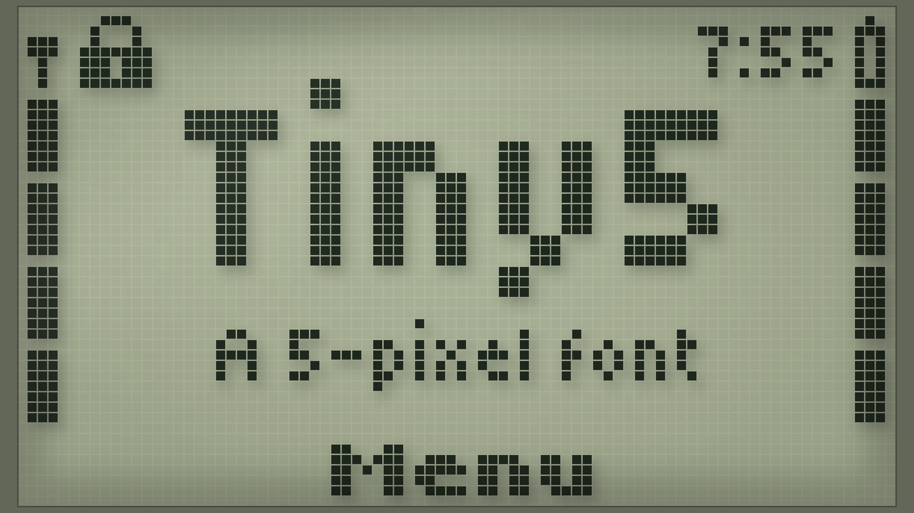
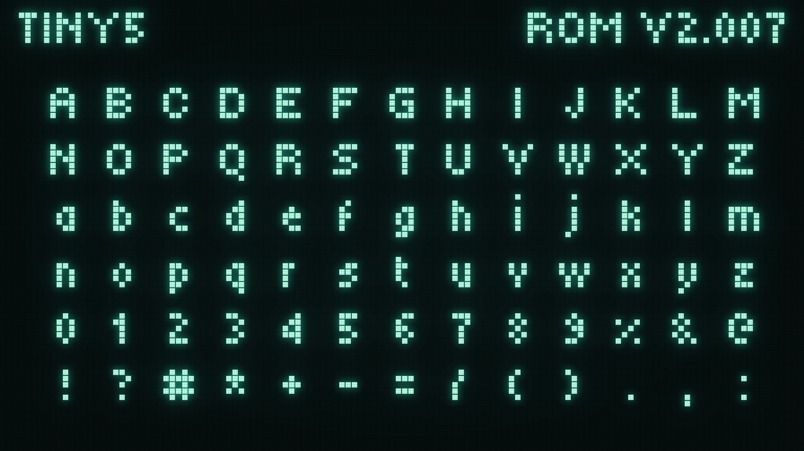
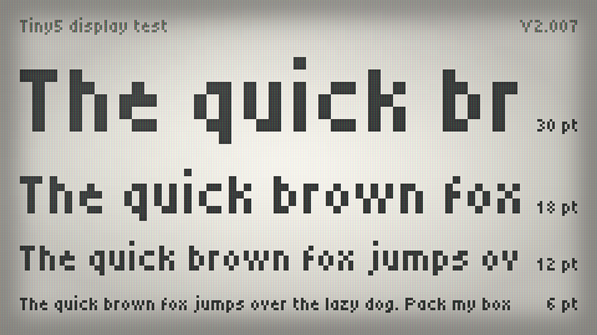
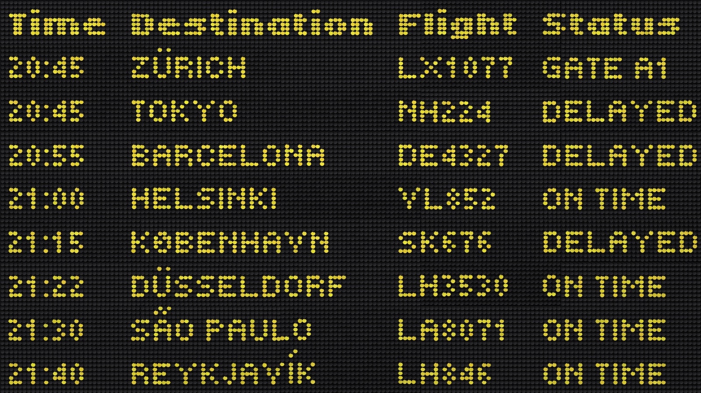
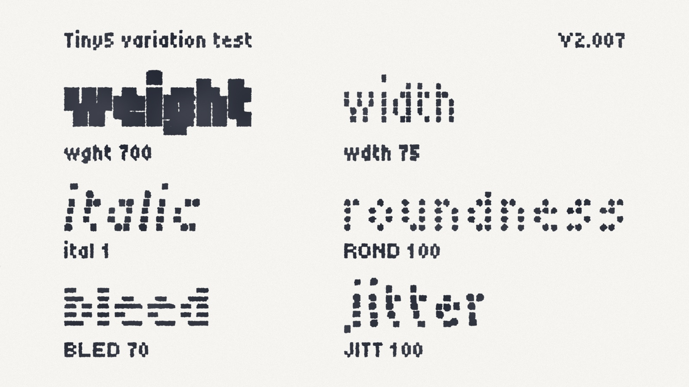
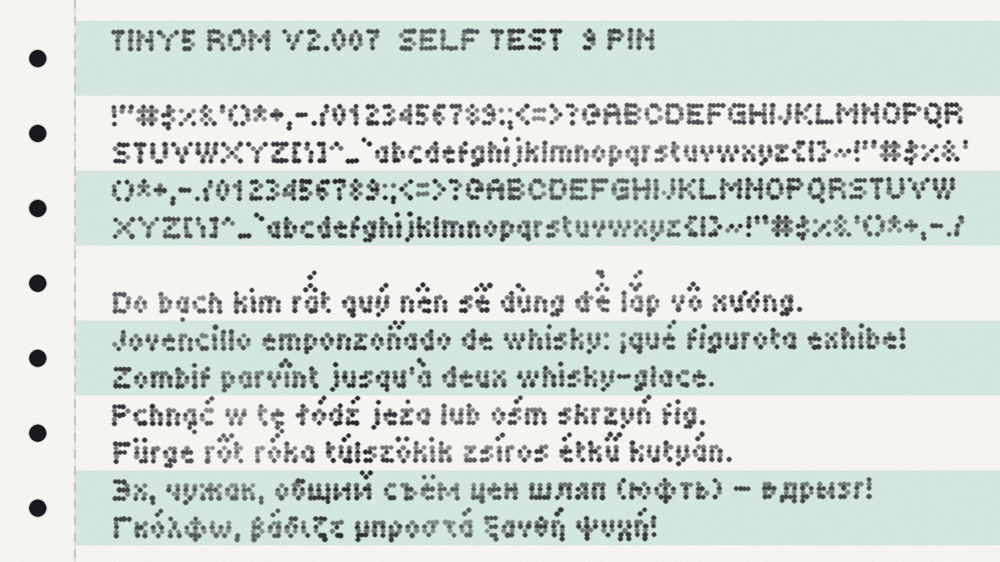

Tiny5 is a compact 5-pixel variable font that captures the essence of 1980s–90s digital minimalism. Inspired by the graphing calculators and pocket gadgets of the era, it distills letterforms to their absolute essentials—proving that even at just five pixels tall, clarity, charm, and personality can thrive together.
It features six variable axes — Weight, Width, Italic, Roundness, Bleed and Jitter — giving you precise control over its look: from crisp geometric shapes and sharp LCD edges to the soft glow of CRT monitors and the subtle ink spread of dot-matrix printers.
Tiny5 is part of a family that also includes Tiny5 Duo. Where Tiny5 draws every stroke one pixel wide, Tiny5 Duo uses two-pixel stems for bolder emphasis, while sharing the same letterforms, variable axes and character set. Used together, they give you a light and a heavy voice that stay true to the pixel-perfect aesthetic.
Tiny5 excels at evoking retro-futurism, constrained-tech nostalgia, and clean minimalism. It's especially well-suited for:
The family provides broad language support, covering Latin, Greek, Cyrillic and Armenian scripts across 974 languages and 1,771 glyphs.
For pixel-perfect results, set the font size to increments of 6 pt (8 px).
To contribute to the project, visit github.com/Gissio/font_Tiny5.






